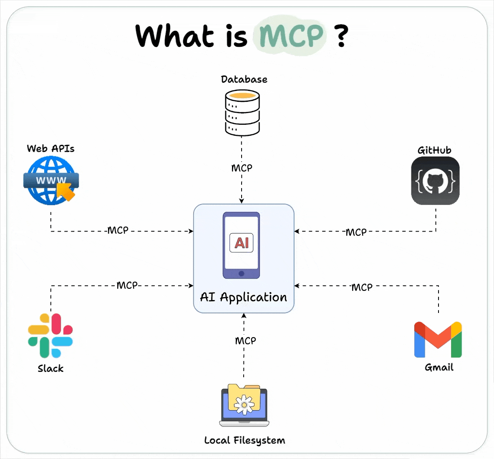

1 什么是 MCP 技术？
MCP，全称 Model Context Protocol（模型上下文协议），是一种开放标准协议，最早由 Anthropic 公司于 2024 年 11 月推出，旨在让大型语言模型（LLM）能够以标准化的方式无缝连接外部工具和数据源。
可以把 MCP 理解为 AI 界的“USB-C 接口”或“HTTP 协议”：它统一了 AI 模型与外部世界（如数据库、API、文件系统等）交互的方式，让开发者和用户不需要为每种工具或数据源单独开发适配接口，而是“插上就能用”。
2 MCP 的核心作用
- 标准化接口：让 AI 模型和各种外部资源之间的通信变得统一、简单。
- 高效扩展：开发者只需遵循 MCP 协议，就能让 AI 应用轻松接入新的工具或数据源，无需重复开发。
- 多模态支持：不仅支持文本，还能处理图片、音频等多种数据类型。
- 上下文管理：让 AI 模型能高效管理多轮对话和复杂的上下文信息。
3 MCP 的技术架构（0 基础易懂版）
MCP 采用典型的“客户端 - 服务器”架构，分为三个主要角色：
| 角色 | 作用 | 举例 |
|---|---|---|
| Host（主机） | 运行 AI 应用的地方，集成 MCP 客户端，负责与用户交互 | Claude Desktop、智能体 App、IDE 插件 |
| Client（客户端） | 嵌入在 Host 中的模块，负责和 MCP 服务器通信，是 AI 和外部世界的桥梁 | MCP Client 插件 |
| Server（服务器） | 提供具体的数据、工具和提示模板等资源，供 AI 模型远程调用 | 数据库服务器、API 服务、文件服务器 |
4 MCP 的工作流程
- 初始化连接：Host 中的 MCP Client 与 MCP Server 建立连接。
- 请求资源/工具：当 AI 模型需要外部数据或功能时，Client 向 Server 发出请求。
- 执行操作：Server 根据请求，执行相应操作（如查数据库、运行代码）。
- 返回结果：Server 将结果返回给 Client，Client 再传递给 AI 模型。
- AI 继续处理：AI 模型用这些数据继续完成用户任务。
5 MCP 能做什么？
- 让 AI 自动查找和分析本地或远程文件
- 让 AI 直接调用数据库、Web API、执行代码等
- 让 AI 与各种外部系统（如 CRM、OA、邮件等）无缝集成
- 支持开发自己的 AI Agent（智能体），并快速扩展其能力
6 为什么 MCP 重要？
- 极大降低开发难度：以前每接一个新工具都要写很多集成代码，有了 MCP 只需遵循协议即可。
- 让 AI 应用更强大：AI 模型不再是“信息孤岛”，能实时访问和操作各种数据和工具。
- 推动 AI Agent 爆发：MCP 让智能体开发和扩展变得前所未有的简单。
7 MCP 架构简化理解
MCP 采用客户端 - 服务器（C/S）架构，包含三个核心角色 ：
| 角色 | 职责举例 | 类比 |
|---|---|---|
| Host | 用户直接操作的 AI 应用（如 AI 助手） | 电脑主机 |
| Client | 在 Host 内，负责与 Server 通信 | USB 驱动程序 |
| Server | 提供具体功能（如查天气、查文件） | U 盘/外设 |
8 工作原理：一步步举例
9 场景举例：AI 助手查天气
-
用户提问 你在 AI 助手（Host）里输入：“帮我查下明天北京的天气。”
-
客户端转发请求 Host 中的 MCP Client 收到请求，发现需要用到“查天气”这个工具，于是向 MCP Server 发起调用请求 。
-
服务器处理请求 MCP Server 收到请求，调用天气 API 获取北京明天的天气数据
-
返回结果 MCP Server 把查到的天气数据返回给 Client，Client 再传回 Host。
-
AI 助手答复 Host 把天气结果整理后，用自然语言回复你：“明天北京多云，最高温度 28℃。”
10 核心流程总结
- 连接建立：Host 通过 Client 连接 Server，发现有哪些工具可用。
- 能力发现：Client 向 Server 请求“你能做什么”，Server 返回工具清单（如查天气、查文件等）。
- 工具调用：AI 模型根据用户需求，通过 Client 调用 Server 上的相关工具 。
- 结果整合：Server 返回结果，Client 转交 Host，AI 模型用这些数据生成最终答复 。
11 关键术语简明解释
- Tools（工具）：AI 可以调用的具体功能（如查天气、发邮件）。
- Resources（资源）：AI 可以访问的数据内容（如本地文件、数据库）。
- Prompts（提示）：预设的任务模板或指令，帮助 AI 更好地理解和操作工具 。
12 总结类比
- 过去，AI 和每个外部系统都要单独“造轮子”对接，开发量大、难维护。
- 有了 MCP，AI 和工具都只需遵循 MCP 协议，就像所有设备都用 USB 接口，插上即用，极大简化了集成和扩展。
一句话总结：MCP 让 AI 像插 USB 一样，安全、标准地访问和调用各种外部工具和数据，实现“万物互联”的 AI 应用体验。